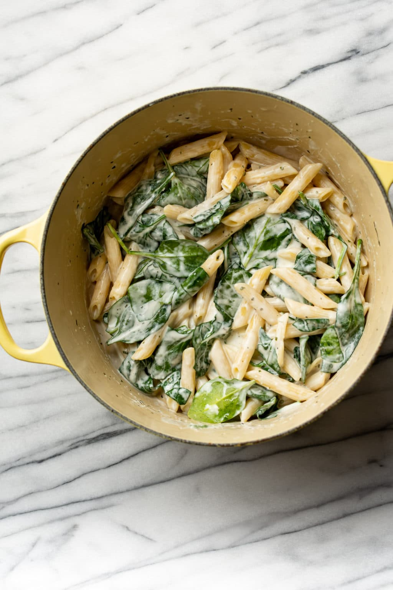

Easy Boursin Cheese Pasta Recipe

Ingredients:
- 8 ounces uncooked penne pasta
- 1 (5.2 ounce/150g) package Boursin Fine Herbs & Garlic cheese
- 2 cups (packed) fresh baby spinach
Instructions:
- Boil a salted pot of water and cook the pasta al dente according to package directions. Important: reserve about a cup of the pasta water before you drain it
- Drain the pasta, then add it right back into the pot it was cooked in (take it off the burner). Add the Boursin cheese and a small splash (a few tablespoons or so) of the pasta water. Toss until you've got the sauce the consistency that you want, gradually adding in more of the pasta water as needed. You likely won't need to use most of it.
- Add in the spinach and continue tossing the pasta until everything is coated in sauce. Cover the pot and let it wilt for a minute or two, then serve. Add some salt & pepper if needed.
Note: Add the pasta water slowly so the dish doesn't become too watery.